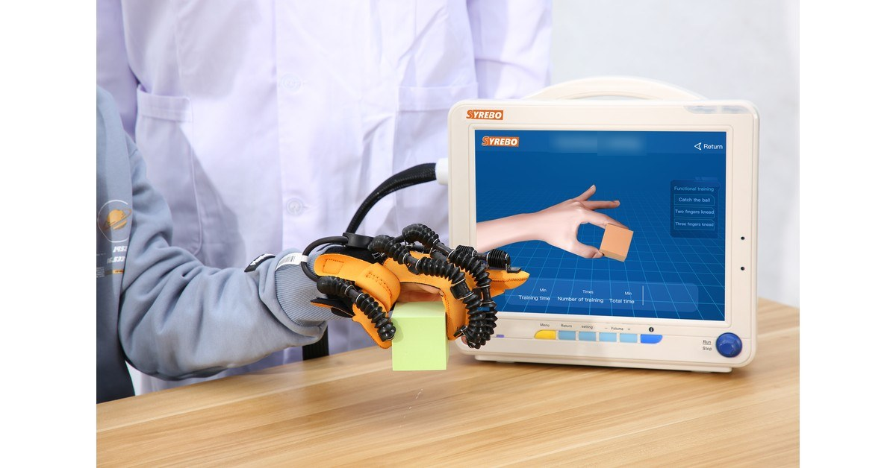

Syrebo 临床研究专栏
循证 · 康复机器人手套临床研究解读
文献摘录
Combined Effect of Robotic Hand Training with Neuromuscular Electrical Stimulation on Hand Function and Quality of Life in Stroke Patients: A Randomized Controlled Trial
Alaa Elhamy Mansour Abd-Eltwab, Wael Shendy, Ebtesam Fahmy, et al.
The Egyptian Journal of Hospital Medicine, 2026;103(1):2607–2611
DOI: 10.21608/ejhm.2026.504952
论文图片：待确认授权，本页不转载。

46 名慢性期患者随机分组，42 人完成。研究组接受机器人手治疗加同步神经肌肉电刺激，再加上常规物理治疗；对照组接受常规物理治疗。六周后，论文报告握力的组间 p=0.002。Purdue 钉板患手成绩的组间 p=0.076，不能把这一项写成组间显著。研究组同时用了两种技术，组间差别也不能全部算到手套上。
握力是一把力。钉板看的是把小栓放进孔里的精细操作。两项可以同时测量，却不必同时“显著”。只引用有组间差别的那一项，会把另一项的结果藏掉。
电刺激和机器人手绑在一起时，句子的主语是组合。对照若只有常规物理治疗，时间上虽然对齐，内容并不是“同一套治疗再加一个因素”那么单纯。
纳入年龄 50 至 65 岁、病程 6 至 24 个月的慢性期患者。研究组先做机器人手与同步电刺激 20 分钟，再做常规物理治疗 30 分钟；对照组做常规物理治疗 50 分钟。每周 3 次，共 6 周。检索片段出现 “Syrebo Hand Rehabilitation Robot, model SY” 的字样，支持品牌有关联，但完整型号没有获得，不能按现有产品目录猜一个型号。配图因此只作为品牌场景，并注明不是本研究设备照片。
研究设计
随机对照。研究组是机器人手加同步神经肌肉电刺激，再加常规物理治疗。对照组是常规物理治疗。两组总时长都是 50 分钟，研究组里面叠了两种技术。
样本与周期
46 人随机，每组 23 人。42 人完成，每组 21 人。每周 3 次，共 6 周。随访和生活质量的完整表，全文范围里还没有逐项核对，这里不展开。
核心结果
握力：论文报告研究组由 14.87±1.97 千克到 19.33±2.41 千克，组间 p=0.002。Purdue 钉板患手：研究组组内 p=0.001，组间 p=0.076。因此握力可以说论文报告了组间差别；精细操作只有组内变化，组间没有达到传统的显著标准。这两句要一起出现。
这篇摘要能讨论的是机器人手与电刺激叠在常规物理治疗上之后，握力这一项的组间信号。它同时提醒，组内变化和组间差别不是同一句话，精细操作不能跟着握力一起写成组间结果。
研究边界 组合方案，不能把效果全部归因于手套。42 人、6 周。完整型号未获得。钉板组间 p=0.076，不应写成组间显著。生活质量的完整结果未在这里逐项转写。